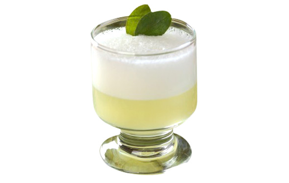

Pisco Sour

A pisco sour is an alcoholic cocktail of Peruvian origin that is typical of the cuisines from Peru and Chile.
The drink's name comes from pisco, which is pisco, and the cocktail term "sour", in reference to its' taste, which is sour.
Ingredients
- 2 oz. pisco
- 1 oz. lime juice, freshly squeezed
- 1/2 oz. simple syrup
- 1 egg white
- Garnish: Angostura bitters
Steps
- Add pisco, lime juice, simple syrup and egg white into a shaker and dry-shake (without ice) vigorously
- Add ice and shake again until well-chilled.
- Strain into a chilled Nick & Nora glass. (Alternatively, you can strain it into a rocks glass over fresh ice.)
- Garnish with 3 to 5 drops of Angostura bitters. Using a straw, toothpick or similar implement, swirl the bitters into a simple design, if desired.
Warning: Consuming raw and lightly cooked eggs poses a risk of food-borne illness. And frankly, it's disgusting.
Go back!